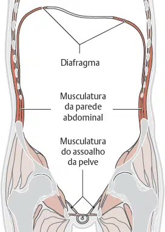
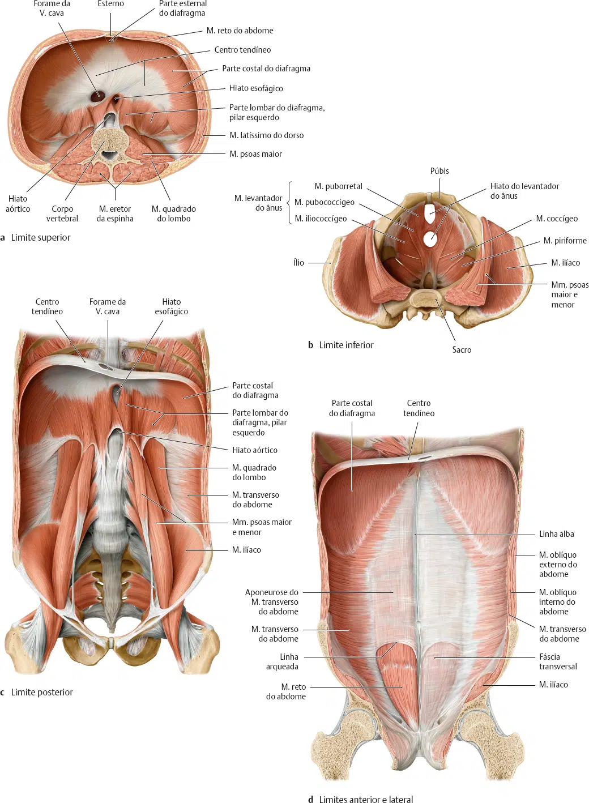
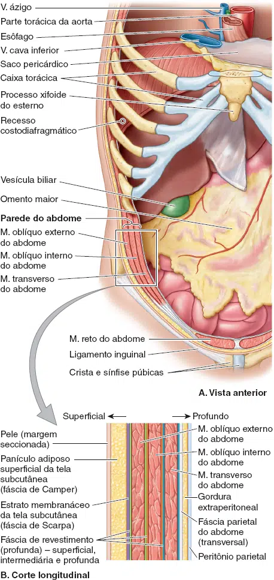

Considerando que estamos focando na relevância clínica e regional da região, podemos resumir a cavidade abdominal em partes, como:
- Definição e Limites Regionais: O que é a cavidade abdominal e como ela se relaciona com o tórax e a pelve?
- Organização Interna: Como o peritônio e as formações fasciais a dividem e protegem? (Foco clínico e cirúrgico).
- Conteúdo Visceral: Quais são os principais órgãos e como eles são vascularizados e inervados?
1. Definição e Limites Regionais
A cavidade abdominal é a parte do tronco situada entre o tórax e a pelve.
Ela é um receptáculo dinâmico e flexível que abriga a maioria dos órgãos do sistema digestório e partes dos sistemas urinário e genital.
Limites
- Superiormente: A cavidade se estende para cima, até o 4º espaço intercostal, na caixa torácica osteocartilagínea. Os órgãos abdominais mais altos (como o baço, o fígado, partes dos rins e o estômago) são protegidos pela caixa torácica.
- Inferiormente: A cavidade abdominal não possui um assoalho próprio; ela é contínua com a cavidade pélvica. O limite entre elas é uma divisão arbitrária (o plano da abertura superior da pelve), não física.
- Paredes: As paredes são musculoaponeuróticas, dinâmicas e formadas por várias camadas. Elas se contraem para aumentar a pressão intra-abdominal e se distendem para acomodar expansões (como ingestão de alimentos, gravidez, gordura ou doenças).


2. Organização Interna
As paredes do abdome e os órgãos adjacentes são revestidos pelo peritônio, uma túnica serosa transparente e deslizante.
O peritônio forma a cavidade peritoneal, um espaço potencial (normalmente contendo apenas uma fina película de líquido lubrificante).
Relevância clínica e cirúrgica do peritônio e fáscias
Peritônio Parietal vs. Visceral:
- O Peritônio Parietal reveste a parede e possui a mesma inervação somática da parede. A dor nessa camada é geralmente bem localizada (somática).
- O Peritônio Visceral reveste as vísceras e é insensível a toque ou laceração, sendo estimulado por distensão ou irritação química. A dor visceral é mal localizada.
Tipos de Órgãos e Dor Referida:
- Órgãos Intraperitoneais: Quase totalmente recobertos por peritônio visceral (ex.: estômago, baço).
- Órgãos Retroperitoneais: Estão fora da cavidade peritoneal e cobertos apenas parcialmente (ex.: rins).
A dor de vísceras do intestino anterior (estômago, duodeno) é referida ao epigástrio;
A do intestino médio (jejuno, íleo), à região umbilical;
E a do intestino posterior (partes do colo, reto), à região púbica.
Formações Peritoneais
- O Mesentério é uma dupla lâmina de peritônio que fixa órgãos à parede e conduz estruturas neurovasculares. O jejuno e o íleo são suspensos pelo mesentério.
- O Omento Maior é uma proeminente prega de quatro camadas que pende do estômago. É altamente móvel e pode formar aderências, isolando órgãos inflamados (como o apêndice vermiforme), protegendo outras vísceras.
Fáscia Endopélvica (Fáscia Transversal/Parietal):
- Essa fáscia reveste a face interna da parede abdominal.
- Sua importância clínica reside no fato de que permite aos cirurgiões criar um espaço extraperitoneal para acessar estruturas retroperitoneais (como os rins ou corpos vertebrais) sem entrar na cavidade peritoneal.


3. Conteúdo Visceral e Relevância Clínica
A cavidade abdominal contém órgãos dos sistemas digestório, urinário e glândulas importantes (fígado, pâncreas, rins e glândulas suprarrenais).
Essa visão geral é concisa, focando nos aspectos estruturais (regional) e funcionais/aplicados (clínica) do abdome.